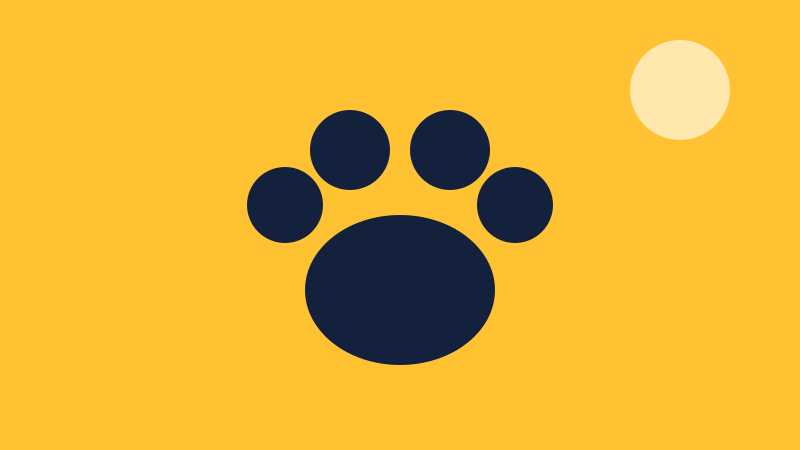

Missão
Resgatar animais em risco e garantir tratamento, abrigo e um novo lar responsável.
O Instituto Patas Livres resgata, trata e encaminha para adoção cães e gatos que vivem nas ruas da zona leste de São Paulo.

Fundado em 2017 por veterinários e voluntários, o instituto mantém um abrigo, uma clínica móvel de castração e um programa de lares temporários.
Resgatar animais em risco e garantir tratamento, abrigo e um novo lar responsável.
Uma cidade em que nenhum animal precise viver abandonado.
Respeito à vida, transparência na prestação de contas e trabalho voluntário.
Atendimento de segunda a sábado, das 9h às 17h.